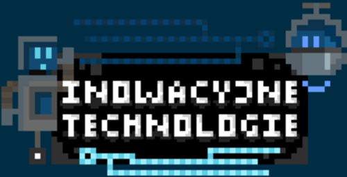

Technologia wciąż się rozwija, a wraz z nią pojawiają się nowe zawody, które specjalizują się w jej konkretnych dziedzinach. Gdyby kilka lat temu ktoś powiedział nam, iż w przyszłości możliwe będzie poruszanie się w wirtualnej rzeczywistości, nie potrafilibyśmy wyobrazić sobie tak niesamowitej technologii. Dziś jest to dla nas rzecz normalna. Z biegiem lat pojawiają się coraz nowsze maszyny, które ułatwiają nam życie codzienne lub pomagają w różnych dziedzinach życia. Jakie zawody, które związane są z innowacyjnymi technologami, możemy podjąć?